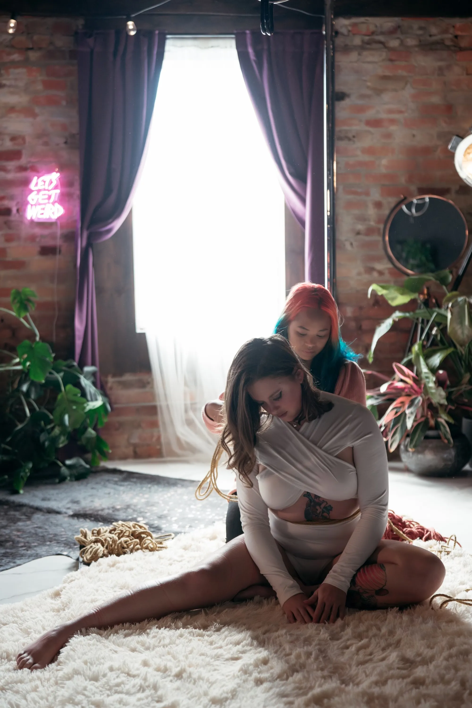
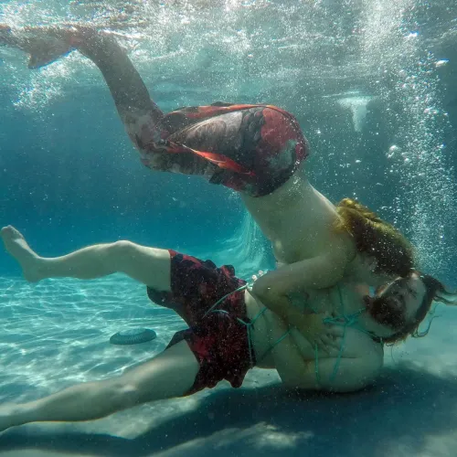
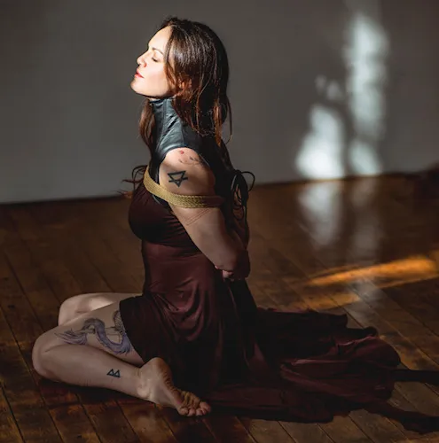
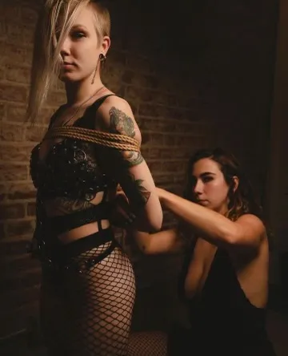
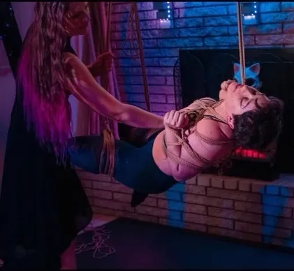

Hi! I’m Quinn, I’m a top leaning switch/ self suspender. I’ve been in the kink scene for going on 4 years. Most of my rope knowledge comes from the high volume bottoming I did for the majority of my time in the kink scene in Hampton Roads. Some private lessons here and there, I have been tying for 3-ish of those 4 years. My style of rope is very simple - I love single columns, I love Leif Bounds front hands harness, I love futomomos and leg /calf / waist cages. I like predicament. I like making people feel safe, I like providing a space for people who have never experienced rope or have misconceptions about what it really is, or have had bad experiences. A lot of people don’t realize that the rope itself does most of the work- it’s how you use it- you don’t need all these transitions, flips, kicks. Of course, play consensually within your risk profile; but that type of rope isn’t for everyone.

I have been working within the Shibari community for over eight years in the Hampton Roads Area. A majority of my experience comes from one on one with other tops or bottoms, as I enjoy a very intimate learning/teaching environment. I specialize in creating physical contact and nourishing the connection between rigger and bottom for the most optimal experience for all involved.

Pixiegurly (she/her) has been intentionally engaging in BDSM, primarily as a submissive leaning bottom, since 2006. In 2017 she helped establish a local rope group in her area which she continues to be heavily involved in running. She identifies as a bitchy / bossy bottom whose style may be best described as ‘sensually stupid,’ due to her love for the ridiculous. Her primary kink interests include impact, D/s play, and rope. Outside of kink her passions include puns (they are all hilarious, please tell her your favorites), animal welfare, and all things Halloween and horror related.

Miss Doctor is a kink-friendly practicing physician who works in primary care with an emphasis on musculoskeletal medicine, endocrinology, and women's health. She has been personally involved in the world of BDSM for over 20 years and she started to explore Shibari in 2013. Her experience as a rock climber, athlete, and artist provide her with a practical perspective on bottoming, rigging, and self-suspension. Her years of experience as an educator help her make safety, anatomy, and health concerns easy to understand and apply. She encourages hands-on exploration and helps students develop a more intimate understanding of themselves and their partners. She is one of the leaders of the Arizona Shibari Studio and one of the organizers of the rope convention Desert Bound.
Isean (pronounced E-shawn) is a certified personal trainer and a student of yoga who has tied, bottomed, and taught across the U.S. and internationally. A skilled rigger and very experienced bottom, she began with an interest in self-tying 9 years ago and has never looked back. Isean has worked with a number of talented riggers and bottoms and developed her own hands-on teaching approach which focuses on her style of tying and sadistic nature. Isean's style of tying involves a focus on broken shapes, pressure points, and manipulation of the body through direct contact to control and to inflict pain. She views rope as a tool to allow her to manipulate the body in any scene from connective rope to impact play. Her style of tying is art, deep trust, sensuality, pain, lust, and more. Her style continues to evolve as she incorporates new disciplines and techniques into her own practice. She hopes students will be able to find new knowledge in her teaching, and use it to expand their skills and develop their own individual style.
I have been practicing rope as a bottom for about 9 years, with experience in both suspension and floor work. I am a nurse at a local hospital and have prior experience in EMS.As a Bottom, I have developed and delivered a number of classes with my partner, both locally and nationally. I have also collaborated with local instructors and presented content related to safety and responses to injury in rope in person and as part of the written content of structured classes that are practiced throughout several communities. My contributions can be found on the Rope Study site and classes compiled by Maiistsohyazhi of Richmond, Va. I approach education from the perspective of the Bottom, and emphasize the development of the mind-body connection and self-awareness in order to understand what and how to communicate effectively in rope.

(She/They/Daddy Fox) A genderfluid and Sadistic rigger whose dynamic style keeps Bottoms on their toes. Passionate about every BODY belonging in rope, Ropeosaur values diversity, openly working with chronic pain and partners of varying body shapes, sizes, and gender-identities. Outside of kink, Ropeosaur is a full-time healthcare professional with a Master’s degree and Plant Daddy to their garden. Ropeosaur also hosts a monthly, private, Queer Rope Jam with the Cyrenaics, where she is fostering the growth of the future of W.T.F. (Women/Trans/Femme) rope Tops. New to teaching, Ropeosaur hopes to inspire others into their capacity of Topping, regardless of size or gender expression.

IPCookieMonster (SlutPhD, Julie Fennell) is a sexual gymnast. She has been a kinky pansexual polyamorous pagan pervert for many years and is the author of the self-dubbed collective autobiography of the BDSM scene, Please Scream Quietly: A Story of Kink. She has also written extensively about her deliciously deviant lifestyle on FetLife and her blog, slutphd.com. A professional sociologist who has studied the BDSM scene for years, she also writes erotica, and is an occasional burlesque / ropelesque performer. When just hanging around, she’s a rope switching bondage daredevil, gleefully slutty femdom, and boot-stomping glitter fetishist. She’ll also cheerfully geek out about the spiritual aspects of sex, kink in general, and rope in particular.